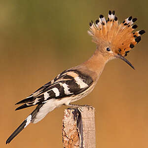
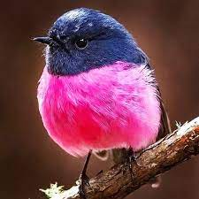
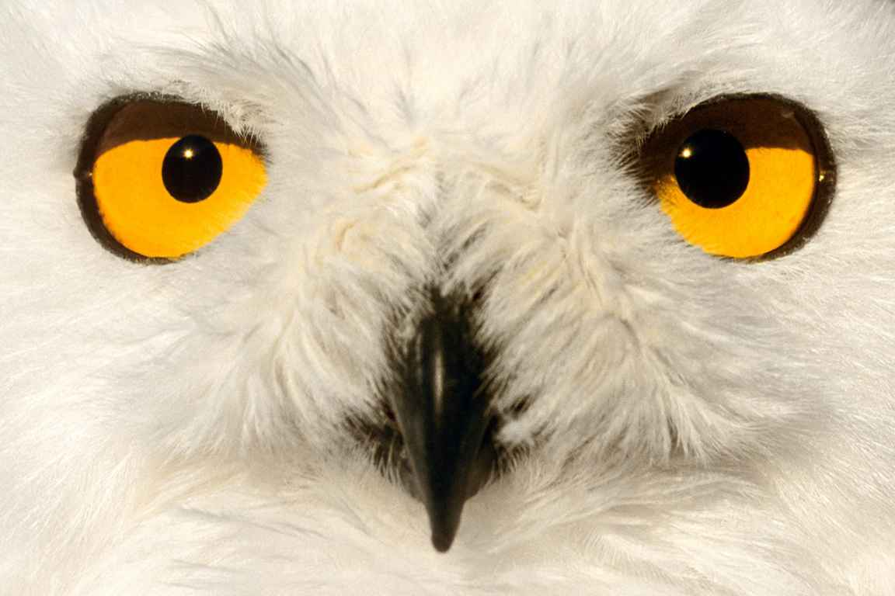

Présentation
L'Espace Naturel de la Motte est une réserve naturelle située en plein cœur de la région. Elle offre un habitat préservé pour une grande variété d'espèces animales et végétales.
Galerie d'images



Rejoignez-nous !
Faune et Flore
Découvrez la richesse de la biodiversité locale avec des espèces rares et protégées. Des sentiers balisés permettent d'observer la faune et la flore dans leur environnement naturel.
Activités
Participez à des activités éducatives, des randonnées guidées, et des ateliers de découverte pour toute la famille. Profitez également des aires de pique-nique et des espaces de détente aménagés.